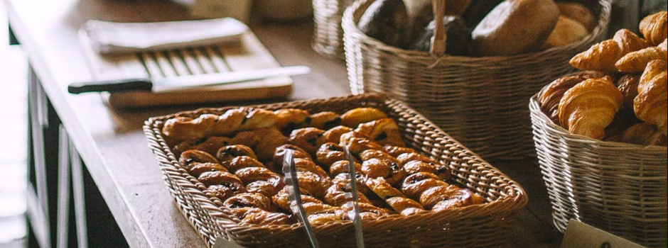

BIENVENIDOS A LA PASTELERÍA
DOBEL CAKES
La pastelería DOBEL CAKES les da la más cordial bienvenida, aquí podrás encontrar la más deliciosa selección de pasteles.
Te invitamos a que veas nuestra gran variedad de opciones en nuestro menú y que hagas tu pedido eligiendo entre una gran cantidad de posibilidades.
Gracias por tu preferencia de parte de todo el equipo pastelero.
